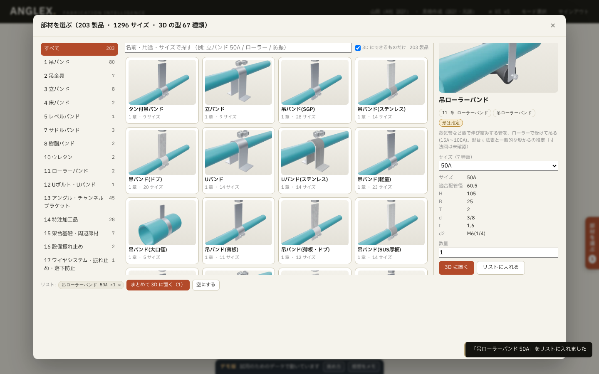
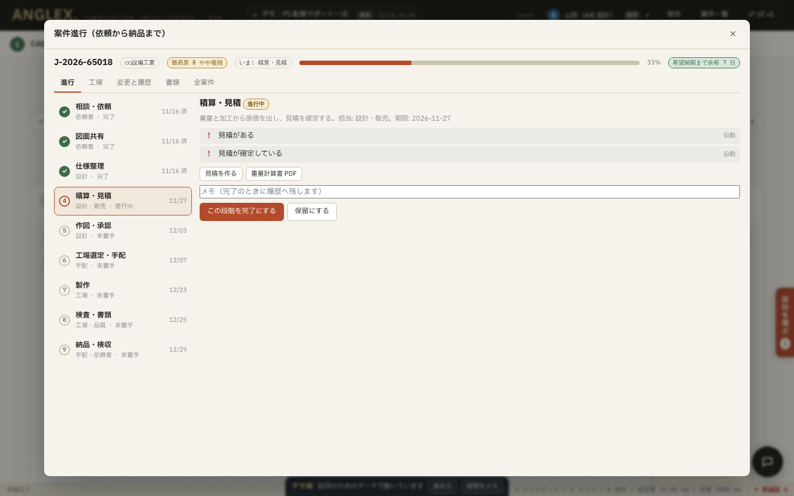
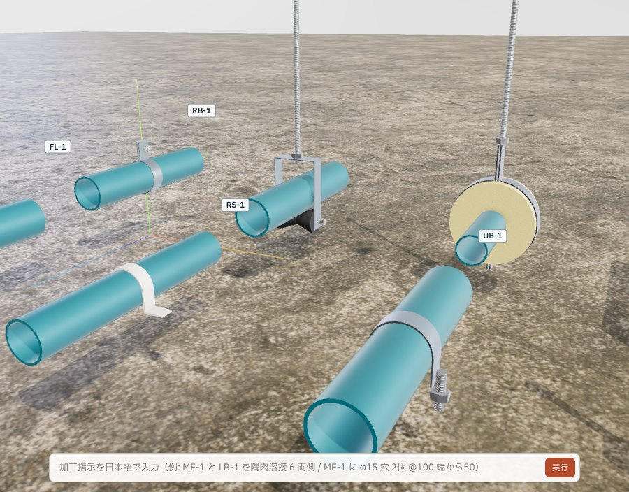
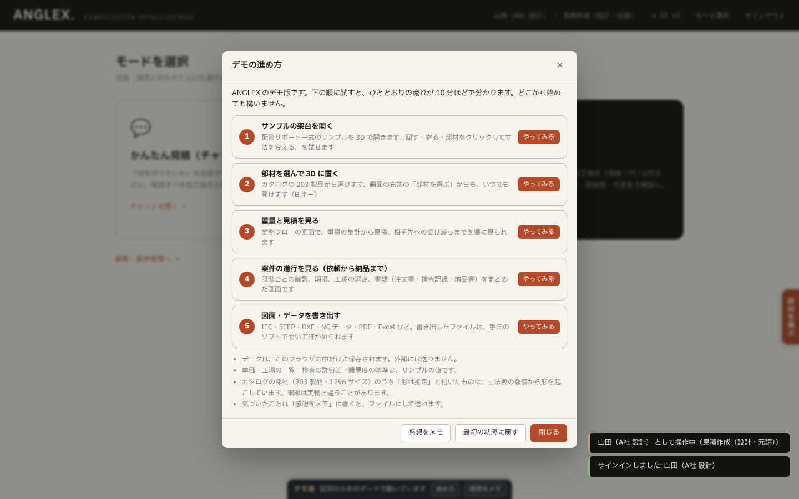

ANGLEX は、配管支持金具と架台を 3D で組み、重量・見積・加工指示・検査記録までを一つのデータから出す道具です。このデモ版は、ファイルを 1 つ開くだけで動きます。インストールは要りません。入力したデータは、お使いのブラウザの中だけに保存され、外部には送られません。
| # | すること | 補足 |
|---|---|---|
| 1 | お渡しした ANGLEX_demo_offline.html を、Chrome か Edge で開く | ダブルクリックで開きます。約 62 MB あるため、開くまで少し時間がかかります |
| 2 | 何も入力せずに「サインイン」を押す | デモ版の認証は形だけです |
| 3 | 「図面から加工指示（3D）」を選ぶ | 「かんたん見積（チャットで相談）」からも始められます |
| 4 | 画面の下の「進め方」を押す | 5 つの手順が出ます。初回は自動で開きます |
| # | 手順 | 見どころ |
|---|---|---|
| 1 | サンプルの架台を開く | 3D を回す・寄る。部材をクリックして寸法を変えると、重量と見積がその場で変わります |
| 2 | 部材を選んで 3D に置く | 画面の右端の「部材を選ぶ」から、203 製品・1,296 サイズを選べます。サインイン後は、どの画面からでも開けます |
| 3 | 重量と見積を見る | 重量の集計、見積、相手先への受け渡しまでを一つの画面で追えます |
| 4 | 案件の進行を見る | 依頼から納品までの 9 段階。段階ごとの確認、期限、工場の選定、注文書・納品書・検収書 |
| 5 | 図面・データを書き出す | IFC・STEP・DXF・NC データ・PDF・Excel など 21 種類。お手元のソフトで開いて確かめられます |




| 内容 | 数 | 補足 |
|---|---|---|
| 3D にできる部材の型 | 67 種類 | 架台、ブラケット、吊バンド、立バンド、床バンド、サドル、ローラー、断熱支持、振れ止め、基礎ブロック、スリーブ、インサートなど |
| 製品とサイズ | 203 製品・1,296 サイズ | 配管支持金具の総合カタログの寸法表から |
| 読み込める形式 | 24 種類 | DXF・PDF・IFC・STEP・画像など。DWG・JWW はサーバー版が必要です |
| 書き出せる形式 | 21 種類 | IFC（IFC4・IFC2x3）、STEP、DXF、DSTV NC、glTF、PDF、Excel など |
| 帳票 | — | 重量計算書、見積書、加工指示書、検査記録シート、注文書、納品書、検収書 |
| 項目 | 内容 |
|---|---|
| 数値の位置づけ | 重量・金額は参考値です。単価、工場の一覧、検査の許容差、難易度と標準日数は、サンプルの値です。貴社の値に置き換えて使う前提です |
| 部材の形 | 「形は推定」と表示される部材（今回追加した 54 製品）は、寸法表の数値から形を起こしています。寸法図との照合はこれからで、細部は実物と違うことがあります |
| 確認していないこと | お使いの BIM・CAD ソフトでの IFC の読込、加工機での NC データの動作は、まだ確かめていません。お試しの結果を教えていただけると助かります |
| データの保存 | ブラウザの中に保存されます。別の PC やブラウザには引き継がれません。「案件を保存」でファイルに書き出せます |
| 動作環境 | Chrome または Edge の最近の版（Chromium 系のブラウザで動作を確認しています）。通信は使いません。Safari・Firefox では確認していません |